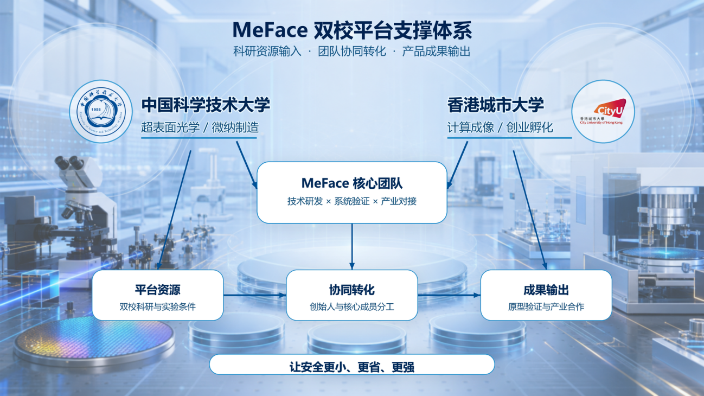
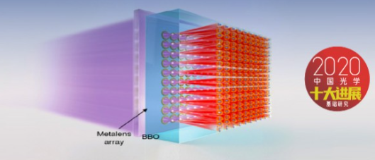
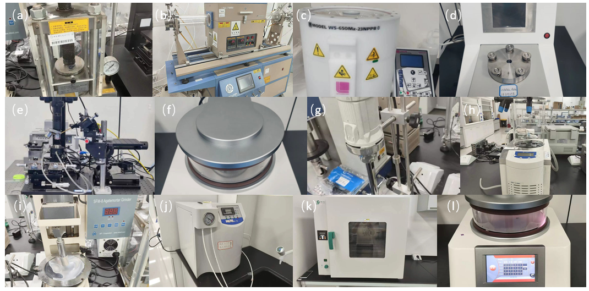
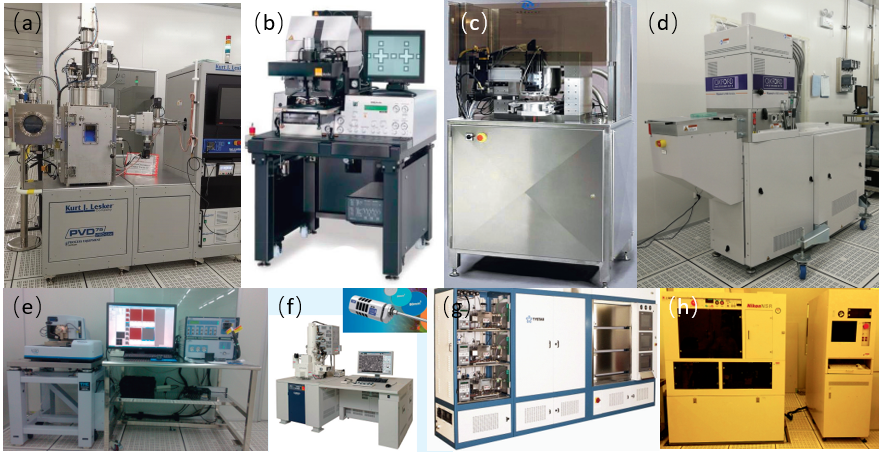
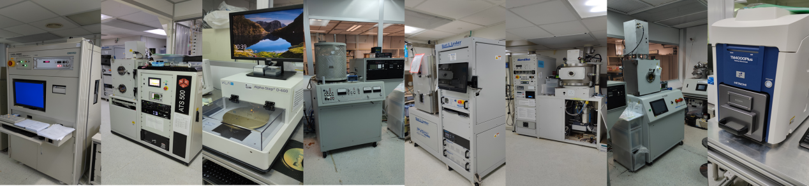

关于 MetaOptix
从超表面光学实验室到硬科技创业公司 — 将前沿纳米光子学转化为可落地的产业价值
公司简介
MetaOptix Limited（墨璞光学科技有限公司）成立于 2025 年 10 月，是一家由 中国科学技术大学与香港城市大学联合培养博士生团队创立的硬科技企业。
公司专注于超表面光学芯片的设计与研发，核心产品 MeFace 是芯片级 3D 人脸识别模组。 以 Fabless 模式运营，为智能手机、AR/VR、AI 眼镜及 IoT 设备提供极致微型化、 高安全、低成本的 3D 感知解决方案。
已获得 HK Tech 300 种子基金与 HKSTP Ideation Programme 资助， 并与舜宇光学等产业链头部企业建立合作意向。

从实验室到原型验证


罗振东
项目负责人 (CEO)
中国科学技术大学与香港城市大学联合培养博士，研究方向聚焦超表面光学、纳米光子学、 微纳制造与红外光学器件。以第一作者在 Advanced Science、 ACS Photonics、 Advanced Photonics Research 等期刊发表多篇超透镜相关论文，总计发表高质量 SCI 论文 10+ 篇。
曾获博士研究生国家奖学金、中科大一等学业奖学金、精密机械与精密仪器系"859"奖学金、 蒋庄德院士传感器奖学金提名奖。多次在国际会议上作报告并获奖。 2025 年创立 MetaOptix Limited，统筹技术路线、团队组织、融资对接与产业合作。



"光学设计 · 算法系统 · 商业治理" 能力闭环
以下信息源自商业计划书表17：核心成员构成
程家洛

Cynthia LAI
朱凡

李一鸣

陈之钰

徐廉杰
学术指导团队
以下信息源自商业计划书表18：指导老师构成
孟婷 实验师
中国科学技术大学 工程科学实验教学中心
曾于中科大精密机械与精密仪器系从事博士后研究，主要从事微纳米结构材料传热、热电性能研究。 在 Nano Letters、APL 等国际高水平期刊发表论文十余篇，一作论文曾入选 Nano Letters 期刊封面。
张鹏 副教授
合肥工业大学 集成电路创新学院 · 黄山学者学术骨干
曾在中科大精密机械及精密仪器系任特任副研究员。研究方向为微光机电系统、微纳加工技术和光学超透镜。 主持国家自然科学基金青年科学基金及军工横向项目，发表论文 20 余篇。
学术顾问团队
以下信息源自商业计划书表19：学术顾问构成

赵旸 教授
微纳制造与传感器工艺指导 · 中国科学技术大学
精密仪器与精密制造系教授、博导。UC Berkeley 博士。长期从事微纳结构制造、传感器设计制造、 纳米结构传热等方向研究。为 MeFace 在微纳加工、器件制造、封装与工程化验证方面提供关键技术指导。
陈沐谷 助理教授
超表面光学与纳米光子学指导 · 香港城市大学
电机工程学系助理教授，台湾大学物理系博士。研究方向涵盖超构表面、纳米光子学及 AI 辅助光学设计。成果涉及 Science、Nature Nanotechnology 等高水平期刊， 曾获中国十大光学进展成果认可。
双校联合 · 从基础研究到工程验证
🔬 中国科学技术大学
微纳米复合材料研究所 + 微纳研究与制造中心。ISO Class 5 洁净室，配备电子束蒸发、ICP 刻蚀、纳米压印、SEM/AFM 等全套微纳加工与表征设备，支撑 Meta-DOE 样品制备与工艺验证。
🌍 香港城市大学
电机工程系实验室配备 Mask Aligner、Direct Laser Writer、Nano Imprint 等设备。HK Tech 300 创新创业孵化体系提供资金、培训和产业对接支持。



从实验室到产业化
科研启航
在超表面光学、纳米光子学与红外探测方向积累深厚科研成果。团队成员在 Advanced Science、ACS Photonics、Light: Science & Applications 等顶刊发表多篇论文。
协同攻关
从单点科研走向系统工程。光学设计、算法开发、微纳制造、商业分析多方向协同推进，完成核心原型验证、光学仿真与初步系统测试。
公司成立
MetaOptix Limited 在香港注册。获 HK Tech 300 Seed Fund 与 HKSTP Ideation Programme 资助。与舜宇光学等建立合作意向，获行业推荐信。
继续出发
推进封装方案优化、MVP 系统测试。争取将 LOI 升级为 MOU，推动试点集成与联合测试项目，加速从样机验证走向产业落地。
"让安全更小、更省、更强"
我们相信超表面光学技术将重塑 3D 感知的未来。 MetaOptix 将持续推动核心器件国产替代，将高安全 3D 识别从旗舰特权变为全民权利。